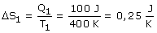
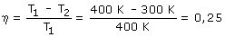
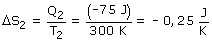

|
Cambio de entropía de la máquina al tomar calor del foco caliente:  Para calcular el cambio de entropía de la máquina al ceder calor al foco frío hay que obtener antes el calor cedido:  La máquina convierte en trabajo el 25% del calor que toma y devuelve el 75%, luego el calor cedido al foco frío es: 75 J  La variación de entropía de la máquina en el ciclo es cero |